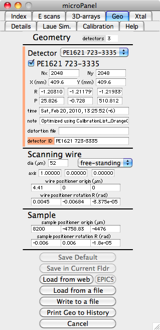
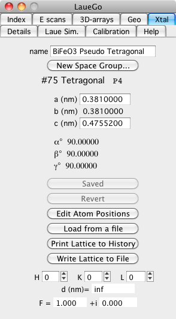
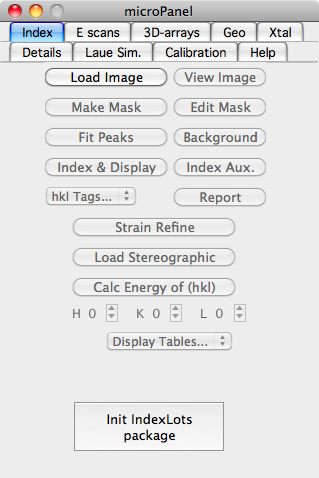
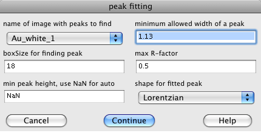
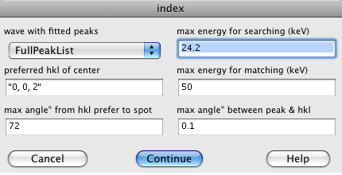
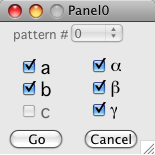
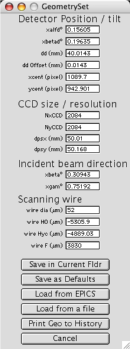

• LaueGo, 3D-Xray Diffraction
This is a collection of routines written by Jon Tischler (ORNL) for analysis of microdiffraction data from sector-34 at the APS. This help file is specific to the new detector geometry.
• Starting the 'LaueGo Panel'
The first step is to load the micro-diffraction procedures. If there is no menu labeled "micro", then you need to do this. Select the menu
"Analysis->Packages->LaueGo [µbeam] -> Select Image Types" this loads the basic procedures and will put up the microPanel. If you are working on Sector 34 (APS) then only select the HDF5 images, otherwise whatever kind of image you are using. If the "LaueGo (micro)"menu already is up, then select the menu "LaueGo (micro) -> LaueGo Panel". You can always do this to retrieve the LaueGo Panel or to bring it to the front.
• Geometry
Berfore almost anything can be done, the calibration parameters also refered to as geometry parameters are needed. These can be set from the "LaueGo (micro)" menu, but the easiest way is to use the "Geo" tab on the LaueGo Panel. When you select the Geo tab, the current geometry parameters are shown. These geometry parameters describe the location and orientation of all detectors, and also the location and orientation of the scanning wire. Look at the values in the Geometry panel and decide if they are correct. If you want to change them, there are various ways to do that.
The simplest way to set the geometry parameters is to load the values from a file. Push the button labeled "Load from a file" and select the appropriate geometry file, it probably starts with "geo" and ends with ".txt". You should have been given a geometry file with your data.

An alternative is to use the web server, this uses a date to fetch the geometry values from a web server at APS. Push the button labeled "Load from web". A dialog will then come up asking you to choose an image file. The program gets the date from this image and then asks the web server for the latest geometry parameters that were measured earlier than this date. You can either save the values for use, or reject them by pushing Cancel. If you retrieve the geometry from the web, you shold probably then "Write to a file" too.
It is also possible to load the geometry values from EPICS, but this is probably disabled, and not too useful anyhow.
NOTE: If you change any of the geometry parameters the Save button changes to "Save Default (Needed)" and turns green. So you need to either push the Save button or Cancel (to reject the changes).
The "Save in Current Fldr" button allows you to have these geometry parameters only apply to the data in the current Igor data folder, you will generaly not want this.
The button "Write to a file", writes the current geoemtry values to a text file that can be later read using the "Load from a file" button
The final button on this panel is "Print Geo to History", this prints the current geometry values to the Igor History window. This is not generally needed, but sometimes useful.
Meaning of the geometry parameters:
First note that the origin is the focus of the x-ray beam and is usualy found using a 4-µm thick piece of Si. The beam-line coordinate system is X is out the door, Y is up, and Z is along the x-ray beam direction. Except for strain refinement, this is the main coordinate system.
The size of the detector is given by four parameters, (Nx,Ny) are the number of raw un-binned pixels in the entire detector. The two parameters X(mm) and Y(mm) are the outside dimensions of the active area (not distance between middle of pixels). Together these four parameters locate a pixel on the detector.
The detector position(s) are specifed using two vectors R and P. The base position of the detector is with the plane of the detector containing the origin, and the detector perpendicular to the incident beam. The detector is assumed centered on the incident beam with the detectors x-axis pointing in the +X direction and y-axis pointing in +Y direction. This is, of course, not a useful location for a detector. The actual detector position is obtained by then doing a translation of vector P followed by a rotation about vector R. R specifies a rotation about the direction of R, and size of the rotation is |R|, where |R| is in radians. The translation by P is applied first, followed by the rotation. The advantage of this order is that the z component of the P vector gives the distance of the detector center from the origin, and the x and y components show how far off-center of the detector is from a perpendicular line to the origin.
The "detector ID" is a string that is unique to a detector and should be stored in each image. Thus the computer csn associate a detector imsge with its geometry parameters.
You can use the pop-up in the Geometry panel to view the values for all of the defined detectors.
The Scanning wire parameters define the location and orientation of the wire. Althouh provisions exist for describing the wire as "free-standing" or "knife edge", only a free-standing wire exists. The "wire positioner at origin" is the PM500 position that puts the wire center on the origin. The "axis" gives the direction of the wire axis on the PM500 (in PM500 units) it will probably be {1,0,0}. The "wire positioner rotation" gives the orientation of the positioner, since the positioner is probably not perfectly aligned with the beam-line coordiates.
The Sample parameters can be used to specify the origin of the the sample using the positioner, but these parameters are generally not used.
• Crystal Structure
Before you can index a pattern, you must specify the crystal structuere. Do this by choosing the "Xtal" tab in the LaueGo Panel. Although the numbers can be entered by hand, it is usually best to enter them by selecting the "Load from a file" button. Remeber to push the "Save (Needed)" button to accept the loaded (or changed) lattice values.
This panel also contains a convienent tool for calculating a d-spacing or atomic structure factor. Just enter the h,k,l values and you will see the d-spacing, and F. The F is calculated assuming that the atomic structure factor is just the atomic number Z.

• Index a Laue Pattern
Select the "Index" tab on the LaueGo Panel, and if you see a button named "Init Indexing package", push it.
To index a Laue pattern, the first thing that you must do is load an image to index. So push the "Load Image" button, and select the image that you want to index.

Next step you need to identify the peak locations. Push the "Fit Peaks" button. This first asks what peak fitting algorithm that you wish to use. The first choice is "Fit Peaks with External" this uses the same C program that is used on the cluster. The other choices use algorithms built into Igor.
For the "Fit Peaks with External" the following dialog is presented:

The image is a list of available images that you can fit.
The minimum allowed widht of a peak lets you set a minimum peak size. The 1.13 is fine for a Lorentzian, for a Gaussian peak use 0.2.
The boxSize should be big enough to include any peak.
the max R-factor should usualy be left at 0.5 unless you have very good or bad data.
The peak shape may be Lorentzian or Gaussian, the Gaussian works best.
After the peak search has run, push button "±boxes" on the image plot. This button toggles the fitted peak boxes on/off.
If you don't like the peaks that were found (either too few or too many), you can edit the list of peaks. To remove a peak from consideration draw a marquee around the offending peak, click in side the marquee to bring up a pop-up menu, and select "Remove Peak from pkList". To add a peak for consideration, again draw a marquee around the desired peak, click in side the marquee to bring up a pop-up menu, and select "Add Gaussian to pkList". Clicking on the "±boxes" button toggles the boxes around all fitted peaks allowing you see which peaks are being used.
Now that the peaks have been found, you can index the pattern, use the "Index & Display" button, which puts up the following dialog:

The popup menu is a list of waves containing fitted peak positions, select the one you want. There will usually be only one choice.
The indexing algorithm constructs a list of possilble hkl's and compares the angles between the calcualted hkl's with the angles between measured q vectors. The list of hkl's is created using the "preferred hkl of center", "max angle° from hkl prefer", and "max energy for searcing" The "preferred hkl of center" and "max angle° from hkl prefer" specify a cone. All hkl in that cone are used, such that the Bragg reflection has an energy below the "max energy". There are two "max energy"s. The "max energy for searching" is used when finding the sample orientation. After the orientation is found, the "max energy for matching" is used to select which measured peaks belong to that pattern. So the "max energy for matching" should usualy be limited to 32 keV, and the "max energy for searching" should not be too big, or there will be too many hkl pairs to consider. The "max angle between peak & hkl" specifies the angular tolerance used when finding an orientation and when choosing which measured peaks are part of a pattern.
Note, the indexing routine may find more than one pattern in the Laue picture. If that happens, then you will be able to view any one of the identified patterns. To view the result of an indexing on the image, select the pop list "hkl Tags...". This will allow you to see the result of the indexing, or view missing peaks.
Now that you know the orientation of the sample, you can also get an oriented Stereographic Projection, or calculate the energy of any hkl. For a Stereographic Projection use the button (you may have to push it twice the first time). For the energy of an hkl, set the H,K,L, and push "Calc Energy of (hkl)".
You may also automatically produce a report sheet that shows the indexed Laue pattern and information about most of the peaks. Push the button labeled "Report", and print it.
Display Tables...
There is also a popup "Display Tables..." which will allow you to easily see tables of information concerning fitted peaks, indexed peaks, strain refined peak, ...
Mousing around:
Once the Laue image has been indexed, you can get information about it using the mouse.
Info about indexed peaks: Hold down the Shift key and move the mouse over the plot.
Info about fitted peaks: Hold down the Command (apple) key and move the mouse over the plot.
Info about any location: Hold down the Command key and hold down the mouse while moving the mouse. This even works before you have indexed.
Info about any Strain Refinement: Hold down the Shift & Command keys and mouse over the plot. This will only work after you have done a strain refinement.
• Strain Refinement
Push the "Strain Refine" button. The following dialog appear:

Select which parameters you want to refine and push "Go". Note that you cannot refine all three lengts (a,b, & c) since you have only collected angular information. The most you can get is the deviatoric strain. Since this program does not know the length of q vectors, when computing the strain it always preserves the volume of the unit cell when strain refinemening.
• Details tab
The Details tab allows you to make movies of many kinds of data, and show some commonly computed information. The "Load Recon Summary" loads the summary file from a depth reconstruction. With the reconstructed images from each wire scan you will find a text file with a name like "WW_1_summary.txt". This file sumarizes the result of a wire scan. The button "Load Recon Summary" will select a summary file, load it, and display the total intensity vs. depth for that wire scan. If you need to re-plot the intensity vs. depth for a loaded summary use the following button "Re-Plot Summary".
• Energy Scans
The "E scans" tab in the mocroPanel" is used for data that was taken by scanning energy. It's main function is to make Q-distrbutions.
First you must push the "Set UpNew E-W scan...".
Enter a title for you plots
Enter a d-spacing (needed to calulate strain, optional)
make up a folder name, something short and without spaces.
PUSH the button labeled "Enter Values, then click here" !!!
If you do not know the preferred d-spacing, just leave it as "Inf".
You can now create a Q-distribution by pushing "Make Q-Depth Surface"
Masking
Sometimes when evaluating a Q-distribution, it is desirable to only process part of an image, e.g. only get the Q-distribution for those pixels near a particular peak. The way to do this is by maskigng. First you need to get a "white" beam image. Since you probably only have an energy scan, just use the "Make a Pseudo White Image" to add up all of the measured energies to make a "white" image. Second push the "Make a Mask" and select the white beam image. Using the marquee you can add or subtract pixels from the mask. You can also use the "New Freehand" button in the top left of the mask image to select pixels using a freehand curve. When you are done setting the pixels, simply close the image plot (push the red dot at top left corner) to finish making the mask. Note that the top of this window says "Close Me When Done". If you wish to change a mask, just push the "Make a Mask" button again and you will be prompted for a mask to edit.
• Laue Simulation
The "Laue Sim." tab. This makes a simulated Laue pattern. If you have already indexed the pattern the Laue pattern should be oriented with the simulated indexed pattern.
• Calibration
Used for calibrating the detectors, and producing the geometry parameters.
• OLD Geometry
• Distortion Correction for
The CCD is not spatially linear; there is some distortion (similar to a pin cushion distortion present in some optics). This can be corrected, and must be corrected for high precision data (especially for strain data). To change this or to determine whether it is being done, go to the "micro" menu which allows you to view the status of the Distortion Correction and to turn is on or off.
• old geometry
The geometry parameters are the numbers that describe the relative position an angle of all of the components. This includes the detector position and angle, the incident beam, and the wire.
They can be set from the mneu "micro->Set Geometry Parameters...". You can either type in the numbers, load the current EPICS values, or load from a geometry file.
Beam Line coordinate system, Z along beam, X out the hutch door, Y is up
Detector coordinage system, Z is up along direction of CCDy, X is out the door, Y along y pixels on CCD
incident beam:
xbeta, xgamma tilt of the incident beam beta is up/down, gam is left right
detector:
NxCCD, NyCCD number of pixels in a full unbinned image
dpsx, dpsy size of the CCD in mm
xalphad,xbetad tilt of the CCD
xcent,ycent pixel directly above source (up is along CCDy)
dd height of (xcent,ycent) above beam
ddOffset dd = CCDy+ddOffset (a correction between dd and CCDy)
wire:
wire dia diameter of wire (µm)
wire H0 H when wire intersects the incident beam
wire Hyc H when wire intersects beam from sample to (xcent,ycent)
wire F F used for H0 and Hyc
